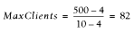

|  |
| |
Setting the MaxClients Directive
Setting the MaxRequestsPerChild Directive
Setting MinSpareServers, MaxSpareServers, and StartServers
KeepAlive
PerlSetupEnv
Reducing the Number of stat( ) Calls Made by Apache
Symbolic Links Lookup
Disabling DNS Resolution
Response Compressing
References
When you implement mod_perl on your system, it's very important to go through the default configuration file (httpd.conf), because most of the default settings were designed without mod_perl in mind. Some variables (such as MaxClients) should be adapted to the capabilities of your system, while some (such as KeepAlive, in many cases) should be disabled, because although they can improve performance for a plain Apache server, they can reduce performance for a mod_perl server.
Correct configuration of the MinSpareServers, MaxSpareServers, StartServers, MaxClients, and MaxRequestsPerChild parameters is very important. If they are too low, you will under-use the system's capabilities. If they are too high, it is likely that the server will bring the machine to its knees.
The KeepAlive directive improves the performance of a plain Apache server by saving the TCP handshake if the client requests more than one object from your server. But you don't want this option to be enabled under mod_perl, since it will keep a large mod_perl process tied to the client and do nothing while waiting for the timeout to occur.
We will talk about these and other issues in the following sections.
It's important to specify MaxClients on the basis of the resources your machine has. The MaxClients directive sets the limit on the number of simultaneous requests that can be supported. No more than this number of child server processes will be created. To configure more than 256 clients, you must edit the HARD_SERVER_LIMIT entry in httpd.h and recompile Apache.
With a plain Apache server, it doesn't matter much if you run many child processes—the processes are about 1 MB each (most of it shared), so they don't eat a lot of RAM. The situation is different with mod_perl, where the processes can easily grow to 10 MB and more. For example, if you have MaxClientsset to 50, the memory usage becomes 50 × 10 MB = 500 MB.[40] Do you have 500 MB of RAM dedicated to the mod_perl server?
[40]Of course, you also have to take into account the shared memory usage, as described in Chapter 10.
With a high MaxClients, if you get a high load the server will try to serve all requests immediately. Your CPU will have a hard time keeping up, and if the child size multiplied by the number of running children is larger than the total available RAM, your server will start swapping. The swapping will slow down everything, which will lead to more swapping, slowing down everything even more, until eventually the machine will die. It's important that you take pains to ensure that swapping does not normally happen. Swap space is an emergency pool, not a resource to be used routinely. If you are low on memory and you badly need it, buy it. Memory is cheap.
We want the value of MaxClients to be as small as possible, because in this way we can limit the resources used by the server's children. Since we can restrict each child's process size, as discussed later, the calculation of MaxClients is straightforward:
So if we have 400 MB for the mod_perl server to use, we can set MaxClients to 40 if we know that each child is limited to 10 MB of memory.
You may be wondering what will happen to your server if there are more concurrent users than MaxClients. This situation is pointed out by the following warning message in the error_log file:
[Sat May 18 13:40:35 2002] [error] server reached MaxClients setting, consider raising the MaxClients setting
Technically there is no problem—any connection attempts over the MaxClients limit will normally be queued, up to a number based on the ListenBacklog directive. When a child process is freed at the end of a different request, the next waiting connection will be served.
But it is an error, because clients are being put in the queue rather than getting served immediately, despite the fact that they do not get an error response. The error can be allowed to persist to balance available system resources and response time, but sooner or later you will need to get more RAM so you can start more child processes. The best approach is to prevent this situation from arising in the first place, and if it keeps on happening you should start worrying about it.
In Chapter 10 we showed that when memory sharing is available, the approximate real memory used can be calculated by adding up all the unshared memory of the client processes plus the memory of the parent process, or, if the latter is unknown, the maximum shared memory size of a single child process, which is smaller than the memory size of the parent process but good enough for our calculations. We have also devised the following formula:
where Total_RAM is of course the estimated total RAM available to the web server.
Let's perform some calculations, first with sharing in place:
Total_RAM = 500Mb Max_Process_Size = 10Mb Min_Shared_RAM_per_Child = 4Mb
then with no sharing in place:
With sharing in place, if your numbers are similar to the ones in our example, you can have 64% more servers without buying more RAM (82 compared to 50).
If you improve sharing and the sharing level is maintained throughout the child's life, you might get:
Total_RAM = 500Mb Max_Process_Size = 10Mb Shared_RAM_per_Child = 8Mb
Here we have 392% more servers (246 compared to 50)!
There is one more nuance to remember. The number of requests per second that your server can serve won't grow linearly when you raise the value of MaxClients. Assuming that you have a lot of RAM available and you try to set MaxClients as high as possible, you will find that you eventually reach a point where increasing the MaxClients value will not improve performance.
The more clients that are running, the more CPU time will be required and the fewer CPU time slices each process will receive. The response latency (the time to respond to a request) will grow, so you won't see the expected improvement. Let's explore these issues.
The test handler that we have used is shown in Example 11-1. You can see that it does mostly CPU-intensive computations.
package Book::HandlerBenchmark;
use Apache::Constants qw(:common);
sub handler {
$r = shift;
$r->send_http_header('text/html');
$r->print("Hello");
my $x = 100;
my $y = log ($x ** 100) for (0..100);
return OK;
}
1;Here's the configuration section to enable this handler:
PerlModule Book::HandlerBenchmark
<Location /benchmark_handler_middle>
SetHandler perl-script
PerlHandler Book::HandlerBenchmark
</Location>Now we will run the benchmark for different values of MaxClients. The results are:
MaxClients | avtime completed failed rps
--------------------------------------------
100 | 333 50000 0 755
125 | 340 50000 0 780
150 | 342 50000 0 791
175 | 338 50000 0 783
200 | 339 50000 0 785
225 | 365 50000 0 760
250 | 402 50000 0 741
---------------------------------------------
Non-varying sub-test parameters:
---------------------------------------------
MaxRequestsPerChild : 0
StartServers : 100
Concurrency : 300
Number of requests : 50000
---------------------------------------------Figure 11-1 depicts requests per second versus MaxClients. Looking at this figure, you can see that with a concurrency level of 300, the performance is almost identical for MaxClients values of 150 and 200, but it goes down for the value of 100 (not enough processes) and are even worse for the value of 250 (too many processes competing over CPU cycles). Note that we have kept the server fully loaded, since the number of concurrent requests was always higher than the number of available processes, which means that some requests were queued rather than responded to immediately. When the number of processes went above 200, more and more time was spent by the processes in the sleep state and context switching, enlarging the latency of response generation. On the other hand, with only 100 available processes, the CPU was not fully loaded and we had plenty of memory available. You can see that in our case, a MaxClients value of 150 is close to optimal.[41]
[41]When we tried the same benchmark on different machines with a much stronger CPU and more memory, we saw different results. So we would like to stress again that the optimal configuration choices for a given application and load pattern may vary from machine to machine.
This leads us to an interesting discovery, which we can summarize in the following way: increasing your RAM might not improve the performance if your CPU is already fully loaded with the current number of processes. In fact, if you start more processes, you will get a degradation in performance. On the other hand, if you decide to upgrade your machine with a very powerful CPU but you don't add enough memory, the machine will use swap memory or the CPU will be under-used; in any case, the performance will be poor. Whenever you opt for a more powerful CPU, you must always budget for enough extra memory to ensure that the CPU's greater processing power is fully utilized. It is generally best to add more memory in the first place to see if that helps with performance problems (assuming you follow our tuning advice as well).
To discover the right configuration for your server, you should run benchmarks on a machine with identical hardware to the one that you are going to use in production. Try to simulate the probable loads your machine will experience. Remember that the load will be variable, and plan accordingly. Experiment with the configuration parameters under different loads to discover the optimal balance of CPU and RAM use for your machine. When you change the processor or add RAM, retest the configuration to see how to change the settings to get the best from the new hardware.
You can tune your machine using reports like the one in our example, by analyzing either the requests per second (rps) column, which shows the throughput of your server, or the average processing time (avtime) column, which can be seen as the latency of your server. Take more samples to build nicer linear graphs, and pick the value of MaxClients where the curve reaches a maximum value for a throughput graph or reaches the minimum value for a latency graph.
|  | |
| 10.3. References |  | 11.2. Setting the MaxRequestsPerChild Directive |
Copyright © 2003 O'Reilly & Associates. All rights reserved.